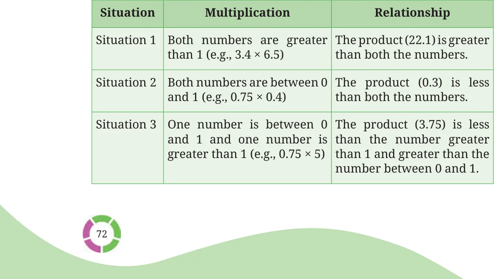

Recall multiplication of two fractions. Unlike counting numbers, when two fractions are multiplied the product is not always greater than or equal to both numbers. Let us examine the case of the product of two decimals.
\(2.25 \times 8 = 18\).
In the above multiplication, the product (18) is greater than 2.25 and 8. But in, \(0.25 \times 8 = 2\), the product (2) is greater than 0.25 but less than 8. In the case of \(0.25 \times 0.8 = 0.2\), the product (0.2) is less than both 0.25 and 0.8.
When is the product of two decimals greater than both the numbers? When is it less than both the numbers? Since decimals are just representations of fractions, the relationship between the numbers multiplied and the product are similar to fractions.
